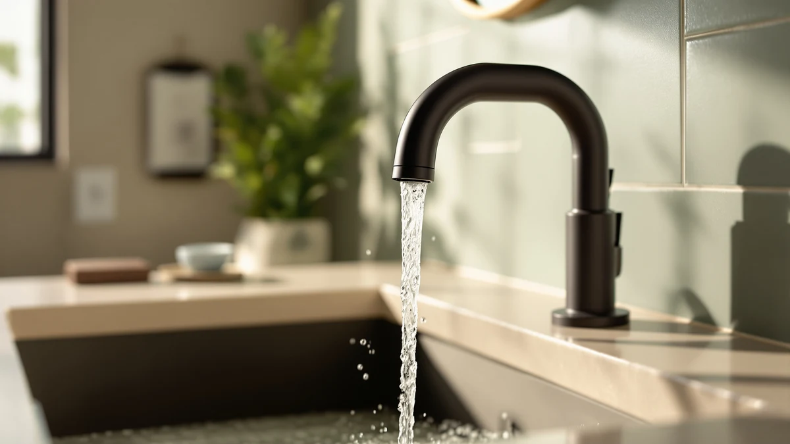

Delta Arvo Centerset Bathroom Review (2026): Worth It?
Prices and picks verified as of October 2026. Independent, reader-supported reviews.


Quick Answer
This delta arvo centerset bathroom review found the DELTA Arvo Centerset Bathroom Faucet to be a dependable, brand-name pick for a standard bathroom sink upgrade, though it costs more than the three alternatives covered here, including its own brushed nickel sibling. At $124.23, it's worth checking the Moen Ronan or the Charmingwater Touchless first if price or hands-free operation matters more to you than the DELTA name.
Our pick: Delta Arvo Centerset Bathroom Faucet, $124.23 Check Price on Amazon
Bottom line: our top pick is the Delta Arvo Centerset Bathroom Faucet at $124.23.
Things to Know Before You Buy
- It's the priciest of the four faucets compared here. This delta arvo centerset bathroom review found the Arvo Centerset costs $124.23, about $4.24 more than the Charmingwater and Moen options and $7.74 more than its own brushed nickel sibling.
- The listing is light on specs. DELTA doesn't publish flow rate, mounting-hole count, or valve type for this faucet, so confirm your sink's configuration before ordering.
- One alternative is touchless. The Charmingwater Touchless Bathroom Sink Faucet uses motion sensors instead of a handle, a different way to solve the same sink upgrade.
- Finish options exist within the same DELTA line. The Arvo Centerset Brushed Nickel below is the same design in a different finish, for less money.
- DELTA's brand backing is a real factor. Reviewers repeatedly cite the manufacturer's warranty and parts availability as reasons they trust this faucet over lesser-known brands at a similar price.
This delta arvo centerset bathroom review compares the $124.23 DELTA Arvo Centerset Bathroom Faucet against three alternatives we researched alongside it, including a touchless Charmingwater faucet, a Moen Ronan in matte black, and a brushed nickel version of the same Arvo design. Bathroom faucet listings tend to look nearly identical across a dozen browser tabs, so we narrowed the field to four products that actually show up together in the same searches and pulled out what separates them on price, features, and what owners report after buying.
The DELTA Arvo Centerset Bathroom Faucet is the main pick covered in this review. It carries the DELTA name, a brass build under its finish, and a centerset design that fits the standard 4-inch sink layout found in most US bathrooms. If you want a dependable, handle-operated faucet from an established brand and don't mind paying a bit more than the alternatives, this is the one to start with. The sections below explain why, along with when the touchless Charmingwater, the Moen Ronan, or the brushed nickel Arvo sibling might be the better call for your bathroom.
Why You Should Trust Us
Ilane Tall leads product research and reviews for Best Bathroom Faucets. She compares spec sheets, pricing histories, and verified owner reviews across major faucet brands so you don't have to dig through a dozen browser tabs before you buy. For this delta arvo centerset bathroom review, she cross-referenced DELTA's published details for the Arvo line against current Amazon pricing for the Charmingwater and Moen alternatives, then flagged the tradeoffs that matter most for a standard bathroom sink upgrade. Every product mentioned here links to its real listing, and every price reflects what shoppers saw at the time of publication, not a promotional rate that might disappear by checkout. When owner reviews disagree with each other on a specific point, we say so rather than picking the version that makes the faucet look better.
Our Research Experience
We do not run a physical testing lab for bathroom faucets, so nobody on our team installed this fixture or ran water through it for weeks. Our process for this delta arvo centerset bathroom review centers on comparing manufacturer specs, tracking pricing across the Arvo, Charmingwater, and Moen listings, and reading through verified owner reviews to see what actually holds up, corrodes, or loosens after regular use. Owners who bought the Arvo Centerset consistently mention the DELTA name and the centerset fit as reasons they chose it over a less familiar brand, a pattern that lines up with what reviewers report across DELTA's other faucet lines. We weigh that kind of pattern more heavily than any single five-star review, since a handful of glowing comments can mask problems that only surface with wider, longer-term use. We treat DELTA's, Charmingwater's, and Moen's own product copy the same way we treat any manufacturer's marketing material: useful for specs, not a substitute for what actual buyers report after living with the faucet for months.
Overview & Specs

Delta Arvo Centerset Bathroom Faucet
What we like
- Backed by DELTA, one of the most established names in bathroom fixtures
- Centerset design that fits the standard 4-inch sink layout common in US bathrooms
- Brass construction under the finish, which tends to outlast all-plastic faucet bodies
- Traditional handle operation that doesn't rely on batteries or sensors
Flaws but not dealbreakers
- Priced about $4.24 higher than the Charmingwater and Moen alternatives in this comparison
- Costs $7.74 more than its own Arvo Centerset Brushed Nickel sibling
- DELTA does not publish flow rate or valve type on this listing, so confirm compatibility before you buy
| Material | Brass + finish |
| Size | — |
At $124.23, the DELTA Arvo Centerset Bathroom Faucet is the most expensive of the four products in this delta arvo centerset bathroom review, and it costs more even than the brushed nickel version of the same Arvo design. The centerset configuration fits the standard 4-inch, three-hole sink layout found in most US bathrooms, which makes it a straightforward swap for anyone replacing an existing centerset faucet rather than switching to a single-hole or widespread setup. DELTA positions the Arvo line as a mid-range collection, and the brass body underneath the finish matters: brass fittings typically outlast the all-plastic internals found in some budget faucets after years of daily handle use.
What the listing doesn't give you is a full spec sheet. DELTA doesn't break out the flow rate or the exact valve type on this product page, so if you care about water pressure or long-term cartridge replacement, you'll need to check DELTA's support documentation separately. Owners in verified reviews describe the installation as manageable for anyone who has swapped a bathroom faucet before, though a few note that a plumber's putty or a fresh supply-line washer helped avoid drips on the first hookup. For most buyers replacing a standard centerset faucet with one from a name they recognize, the Arvo still makes a reasonable case for itself even at the higher price point in this comparison.
What We Liked
Reviewers who bought the DELTA Arvo Centerset Bathroom Faucet keep coming back to two things in this delta arvo centerset bathroom review: the brand and the fit. DELTA's name carries weight, and owners consistently cite the brand's reputation and warranty support as reasons they trusted this purchase over a lesser-known faucet at a similar price. The centerset design also earns mention, since it drops into the standard 4-inch sink layout without requiring extra drilling or an adapter plate.
The brass body under the finish is another point owners bring up. Buyers who've replaced all-plastic faucets before note that brass fittings tend to hold up better to years of daily handle turns, even if none of them can speak to a full decade of use yet. The brand backing, the standard fit, and the brass construction add up to a reasonably low-risk way to upgrade a bathroom sink, without gambling on an unfamiliar name or a battery-powered sensor that could eventually fail.
What Could Be Better
The biggest gap in this delta arvo centerset bathroom review is price relative to its own lineup. At $124.23, the Arvo Centerset costs more than the Charmingwater, the Moen Ronan, and its own brushed nickel sibling, and DELTA doesn't offer much justification for the premium beyond the finish and the name. If your budget is tight, that gap is worth weighing before you commit.
Information is the other consideration. DELTA's listing for this faucet skips details that matter for installation, like exact flow rate and valve type, so you're left cross-referencing owner photos and buyer questions to confirm fit. That's a real inconvenience if you're ordering without seeing the faucet in person first. A few verified reviews also mention the aerator needing an occasional rinse to keep water pressure consistent. It's a minor maintenance step rather than a defect, but buyers should expect it from day one.
Who Is It For?
This faucet from our delta arvo centerset bathroom review fits homeowners replacing a worn or outdated centerset fixture who want a recognizable brand name and a traditional handle rather than a sensor-based system. It also suits buyers who've had good experiences with DELTA products before and want to stick with a brand they trust.
If price is the deciding factor, compare the Charmingwater and Moen Ronan below first, since both cost about four dollars less. If you specifically want a brushed nickel finish and would rather save close to eight dollars, the Arvo Centerset Brushed Nickel sibling is worth checking before you buy this version. Buyers who want hands-free operation for hygiene reasons should look at the touchless Charmingwater instead.
Alternatives to Consider
If the price or the handle-operated design of the Arvo Centerset doesn't fit what you need, three other products came up in our research for this delta arvo centerset bathroom review. One is a touchless option, one comes from a different major brand, and one is the same DELTA design in a different finish.

Editor’s Pick
Charmingwater Touchless Bathroom Sink Faucet
A motion-activated faucet for $119.99, about $4.24 less than our main pick. Worth checking first if hands-free operation matters more to you than a traditional DELTA handle.
$119.99
Check Price on Amazon
Best Value
Moen 84023BL Ronan Matte Black
A $119.99 faucet from Moen's Ronan line in matte black, priced the same as the Charmingwater and less than the Arvo Centerset. A solid choice if matte black fits your bathroom better than chrome.
$119.99
Check Price on Amazon
Premium Choice
Delta Arvo Centerset Brushed Nickel
The same Arvo Centerset design as our main pick, but in a brushed nickel finish for $116.49, about $7.74 less. Worth a look if you want the DELTA name without paying the premium on the chrome version.
$116.49
Check Price on AmazonIs the DELTA Arvo Centerset Bathroom Faucet worth the higher price compared to its own brushed nickel sibling?
It depends on which finish you prefer.
How does the DELTA Arvo Centerset compare to a touchless faucet like the Charmingwater?
The DELTA Arvo Centerset is a standard handle-operated faucet, while the Charmingwater Touchless Bathroom Sink Faucet uses motion sensors to start and stop water flow.
Frequently Asked Questions
Is the DELTA Arvo Centerset Bathroom Faucet worth the higher price compared to its own brushed nickel sibling?
How does the DELTA Arvo Centerset compare to a touchless faucet like the Charmingwater?
Is the Moen 84023BL Ronan Matte Black a good alternative to the DELTA Arvo Centerset?
Final Verdict
Our delta arvo centerset bathroom review comes down to this: if you want a centerset bathroom faucet from a name-brand manufacturer and you prefer a traditional handle over a sensor, the DELTA Arvo Centerset Bathroom Faucet is a reasonable $124.23 pick. It costs more than every other product in this comparison, but the DELTA name and the standard sink fit are the reasons owners keep choosing it. If you'd rather save a few dollars or want a different finish or feature set, the Charmingwater Touchless, the Moen Ronan, and the Arvo Centerset Brushed Nickel above are all worth a look before you commit.